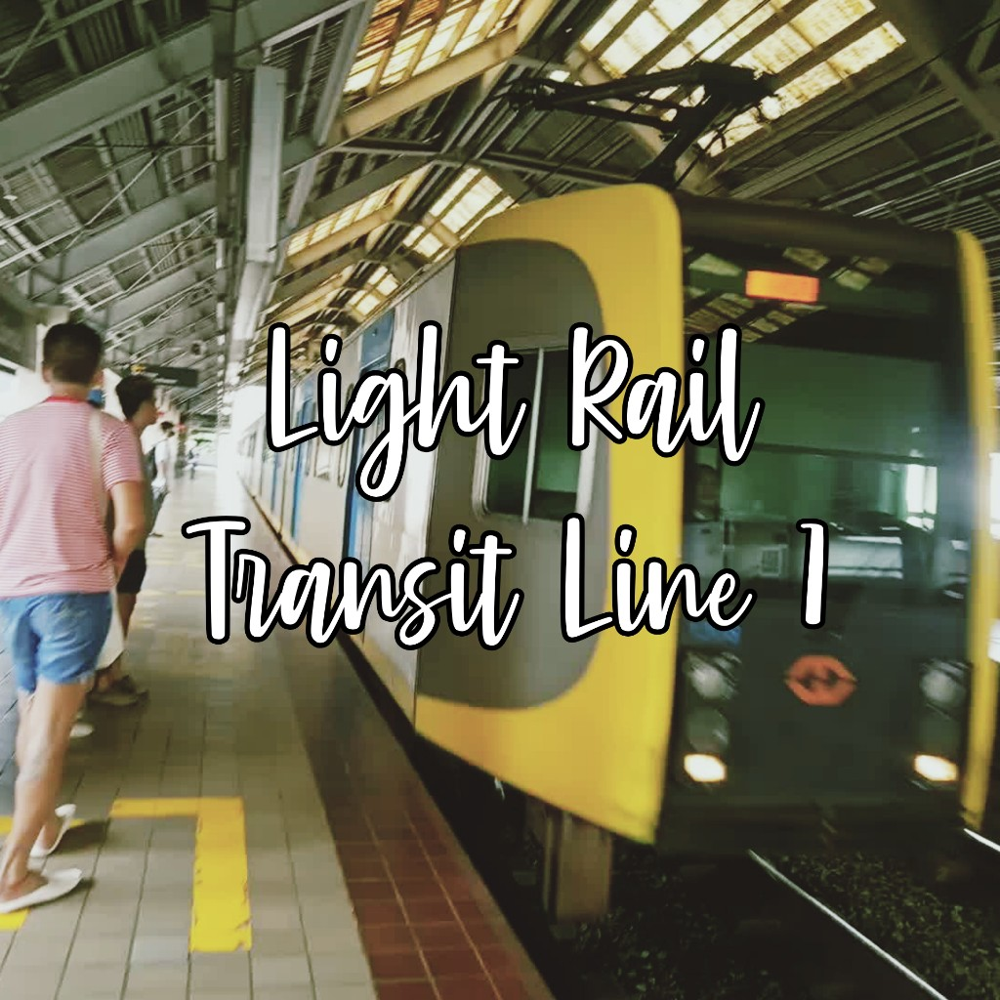

Light Rail Transit Line 1
2023 song by Justin
Light Rail Transit Line 1is a song recorded by the railfan, Justin LRT. It was released on January 31, 2023, as the third song composed from the band's first studio album LRT MRT and as a music video. The song became a viral song on the social media platform YouTube, with many using the ending verse and the line
Baclaran, EDSA, Libertadas a soundbite on the site by throwing back to viral videos.
Light Rail Transit Line 1 |
|
|---|---|
|  | |
| Single by Justin from the album LRT MRT | |
| Released | January 31, 2023 |
| Recorded | 2022 |
| Length | 3:01 |
| Label | Justin • LRT |
| Songwriter(s) | Justin |
| Producer(s) | Justin |
| Music | |
| Audio | Light Rail Transit Line 1on this site |
| Music video | Light Rail Transit Line 1on YouTube |

Light Rail Transit Line 1was initially planned as the album's third song with a release date in December 2022, but it was moved on January 2023 to experience during his train rides. The song speaks about to encourage to ride LRT-1 train, for example,
Gusto mo bang sumakay sa Light Rail Transit Line 1. The music features transitions between a violin, a trumpet, and a piano. The song is described as, according to his classmates.
A strong example that I fearless leap into a multitude of musical genres, daring to explore folk, jazz and musical theatre all within a single track. This ambitious bridging of styles could lead to disaster, but I have mastered the skill, mirroring not only the sound, but also the lyrical content of each genre: InLight Rail Transit Line 1, for example, they encourage to ride the train because its so fast and cold air conditioners. In conjunction with songs that often speak to very foundational human emotions and fragilities, this may be what is most compelling about Justin's music, and what allows the band's songs to resonate with audiences both young and old.
In a YouTube made by the band himself, production for the song included creating a beat with a background video that showing LRT-1 trains. To make background vocals, a vocoder was used. The band also wanted to try to flawlessly seam a transition from a violin to vocals to a guitar, with a theatrical ending to the song where
everything comes at once, with a continuously speeding up verse.
On the same day as its release, a music video was released for
Light Rail Transit Line 1. In the video, Justin performs the song while showing the trains of LRT-1.
The music video had a spike in views after the song went viral; it is currently the most popular song he composed, with 10,000 reached as of October 2023.
Credits adapted from LRT:
- Justin - instruments, vocals, editor, producer, audio mixing, composer
Just months after the song was initially released,
Light Rail Transit Line 1leading to a spike in views on the official music video on YouTube. It is currently the most popular song has Justin composed.
Chart performance for
Light Rail Transit Line 1
| Chart (2023) | Peak position |
|---|---|
| Pasay City West High School musical performance | 3 |
| LRT-1 songs | 1 |
Certifications for "Light Rail Transit Line 1"
| Place | Certification |
|---|---|
| Metro Manila, Philippines | Gold |